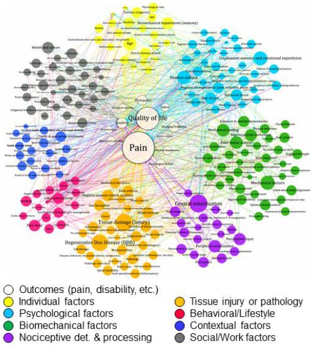

En los siguientes 5 minutos aprenderás a diferenciar entre un dolor normal y sin peligro que forma parte del proceso de recuperación, y los dolores que sí requieren atención y pueden resultar peligrosos.
Porque sentir molestias no tiene por qué ser un problema… si comprendes los mecanismos del dolor, y cómo reducirlo.
Especialista en readaptación de lesiones de rodilla
5 claves que te van a ayudar a comprender que tu dolor puede que no sea tan peligroso como tú piensas (y una sexta de regalo 😊)
Una mini rutina de 3 ejercicios que generalmente puede hacer casi todo el mundo y que tienen un alto potencial analgésico (reducción del dolor).
No obstante, ten en cuenta que habría que revisar dichos ejercicios y ver si para tu caso en concreto pueden ser “peligrosos” por algún motivo
El dolor no es tu enemigo, es un sistema de protección diseñado por tu cerebro para avisarte de que algo PUEDE estar en peligro.
Sin él, nunca sabrías si te has hecho daño en una articulación, si tienes una infección, o incluso si algo va mal en órganos como el corazón o los riñones.
El cerebro lo único que hace es interpretar una señal que le envían los nervios de la piel, órganos y articulaciones, y devolver una señal de vuelta para ejecutar una acción.
Por ejemplo, cuando ponemos la mano sobre un radiador ardiendo el cual NO sabíamos que estaba encendido, inmediatamente nuestra reacción es quitar la mano.
El cerebro ha recibido una señal, ha interpretado que era peligroso, y nos ha obligado a quitar la mano de inmediato.
Si no fuera porque sentimos dolor, nos quedaríamos con un dedo chamuscado.
El dolor te protege, no es tu enemigo.
¿Cuántas veces se ha detectado un cáncer u otra enfermedad tan tarde que la persona por desgracia ha fallecido a los pocos días? Muchas.
Se detecta tan tarde porque la persona no había sentido dolor antes, cuando claramente había uno o varios órganos en su interior que se estaban muriendo.
También, en multitud de estudios se ha visto como muchas personas tenían el ligamento cruzado anterior roto (LCA) y hasta que no se han hecho una resonancia no lo han sabido, porque NO sentían dolor de ningún tipo.
Hay veces que tenemos algo roto o una enfermedad grave y no sentimos nada de dolor. Y viceversa, hay veces que nos duele mucho una parte de nuestro cuerpo, y no nos detectan nada.
Todos conocemos a alguien que tiene dolor en la espalda baja, en el lumbar, y que cuando le hacen pruebas para ver qué es, no sale nada. Esto no es casualidad, se debe a lo que te explico en el siguiente punto:
Aunque el ser humano es una máquina casi perfecta, tenemos defectos, y uno de ellos es que el cerebro puede malinterpretar las señales que hemos mencionado.
Me encanta utilizar esta metáfora, porque a mi padre en su empresa le ha pasado más de una vez:
Imagínate que tienes una empresa, con una alarma de seguridad instalada, que cuando detecte algo llame a la policía de inmediato.
De repente un día suena la alarma, y piensas que te han robado, acudes enseguida para ver qué pasa, y resulta que era un gato que se había colado por la ventana.
La alarma de seguridad ha malinterpretado una señal, y nos ha hecho creer que había un peligro. Pues tu cerebro en ocasiones hace lo mismo. Otro ejemplo:
Estás cocinando unos filetes en la cocina y salta la alarma de humos porque NO has encendido el extractor. ¿Significa eso que se esté quemando la casa?
¿O esto nos demuestra que a veces las alarmas saltan sin existir un peligro real?
Siguiendo el ejemplo de la empresa de mi padre y el gato:
A raíz de estos incidentes, los técnicos lo que hicieron fue aumentar el umbral de peligro por el cual la alarma saltaría. Es decir, ahora tiene que detectar un mayor movimiento para hacer que la alarma suene.
Y es que el cerebro tiene la misma capacidad. A mi me gusta decir que es como un altavoz.
El cerebro puede subir el volumen a su gusto, es decir, puede aumentar o disminuir la sensibilidad con la que interpreta una señal.
Cuando recibe una señal enviada de los nervios de la rodilla, aunque esta señal haya sido de 3 sobre 10, puede amplificar el volumen de dicha señal e interpretar que ha sido un 7 sobre 10.
Entonces claro, hace saltar las alarmas, cuando únicamente era un “gato”, se entiende la metáfora, ¿verdad?
Esto no quiere decir que nunca exista un daño. Puede existir, pero en ocasiones el cerebro exagera la gravedad de este.
Nuestro objetivo por lo tanto será aumentar el umbral que hace saltar las alarmas, “bajándole” el volumen al altavoz del cerebro, en lo que a nuestra lesión de rodilla respecta.
¿Es posible que exista un daño y un peligro real?
¿Es posible que el cerebro lo esté exagerando y no sea tanto como parece?
El dolor es un fenómeno complejo, y depende de muchas cosas más que meramente un daño en la estructura, en la rodilla (que muchas veces también).
Los siguientes factores (todos) influyen en cierta medida en que tu cerebro aumente o baje el volumen a su altavoz:

La lesión, tu biomecánica, tu contexto familiar, amoroso, de trabajo... e incluso tu propia personalidad y estilo de vida... TODOS juegan un papel importante.
Todos conocemos a una persona que ha tenido en alguna ocasión un accidente de tráfico, y desde entonces, SIEMPRE ha tenido dolor de cuello u hombro, nunca consigue que se vaya.
Y es que aunque bien es cierto que el dolor es bueno y nos protege, no debería mantenerse tanto tiempo. Si esto sucede, significa que el dolor se ha cronificado. ¿Qué significa esto?
Se ha producido un exceso de sensibilización del sistema nervioso central, es decir, del cerebro. Tu cerebro está tan “asustado” que quiere evitar que le vuelva a pasar lo mismo, y al mínimo gesto que haces, te genera dolor.
¿Significa eso que tengas el cuello lleno de “contracturas” o con algo roto? No tiene por qué.
Quizás es simplemente que NO le has demostrado al cerebro que no pasa nada por hacer esos gestos, que está a salvo, que ya no estamos en aquel accidente de tráfico.
Por eso debemos exponernos de forma gradual a aquello que nos hace daño, para evitar ese exceso de sensibilidad, para demostrarle al cerebro que ya no existe peligro, y construir tolerancia al movimiento poco a poco.
Pero, ¿cómo podemos saber si los ejercicios que hagamos son buenos o malos?
Como bien he dicho, sentir dolor es bueno, pero un exceso de este puede ser peligroso, porque quizás lo que estemos haciendo sea contraproducente. Por eso, deberemos seguir las siguientes estrategias:
El dolor se debe saber interpretar adecuadamente para evitar que un ejercicio que te ayuda a construir tolerancia pase a ser uno que la disminuye...
Para ello, utilizo 2 estrategias con mis deportistas que les ayudan a saber cuándo un ejercicio está siendo bueno o contraproducente:
Consiste en evaluar el dolor provocado por un ejercicio en una escala del 1 al 10, de forma subjetiva. Todo aquello que supere el 4, se deberá adaptar o modificar.
Para ello, disponemos de un desglose preciso de las sensaciones que genera cada número, para que sepan con precisión qué numero asignar a cada ejercicio.
Evaluamos el dolor en reposo o durante el calentamiento de una actividad, y en base a la respuesta durante el entrenamiento, le asignamos un color (VERDE, AMARILLO Y ROJO) y se toma una decisión estratégica acerca de si aumentar la carga de los entrenamientos, mantenerla o reducirla, en base a una serie de criterios que tenemos marcados.
Los ejercicios isométricos y se ha demostrado que son los que mayor efecto analgésico tienen, dado que aumentan la fuerza y la tolerancia de tus tejidos sin que haya movimiento de estos, por lo que resulta bastante seguro y nos permite aplicar mayores cargas con menor dolor. Luego evidentemente sería necesario progresar estos ejercicios, darles variedad y seguir asciendo en el espectro de intensidad. También hay que adaptarlos en base a cada lesión y cada persona, pero por norma general son bastante seguros.
Clica en los siguientes títulos:
Cuanto más cerca nos quedemos del suelo, más dificultad requiere el ejercicio. La idea sería adoptar una posición relajada que nos permita mantener entre 20-90 segundos dependiendo del nivel
A diferencia de lo que digo en el vídeo, para hacerlo más analgésico para “novatos”, habría que ejercer un 40-50% de fuerza solo, y mantenerlo durante 30-90 segundos, dependiendo del nivel
Sería interesante realizarlo con un metrónomo para cumplir con los tiempos al dedillo y además añadir un estimulo cognitivo. Es un buen ejercicio para progresar a ejercicios dinámicos más adelante.
Espero que esta guía te haya sido de ayuda para comprender un poco mejor lo que pasa en tu cuerpo, y que el dolor no es tu enemigo, sino tu aliado, tan solo debes saber manejarlo y utilizarlo a tu favor.
Si después de leer este documento sigues con dudas acerca de qué ejercicios son los que te van a ayudar a reducir el dolor, y cómo deberías estructurarlos para sacarles el máximo partido...
Recuerda que estamos aquí para lo que necesites, que pedir ayuda es de sabios, y que la mejor forma de conseguir algo, es dejar que alguien que ya lo ha conseguido te diga cómo hacerlo.
PORQUE SÍ, YO TAMBIÉN ESTUVE CON DOLOR CRÓNICO Y LLENO DE LESIONES, Y CONSEGUÍ ELIMINARLAS DE MI VIDA
Y me encantaría poder ayudarte en la medida de lo posible
Te dejo el siguiente código QR para que ESCANEES o CLIQUES en él, y me preguntes tus dudas por WhatsApp acerca de tu caso en concreto 😊
¿Quieres que lo veamos aplicado a tu caso? Cada rodilla y cada proceso es distinto, y muchas veces pequeños ajustes marcan una gran diferencia.
Escríbeme sin compromiso